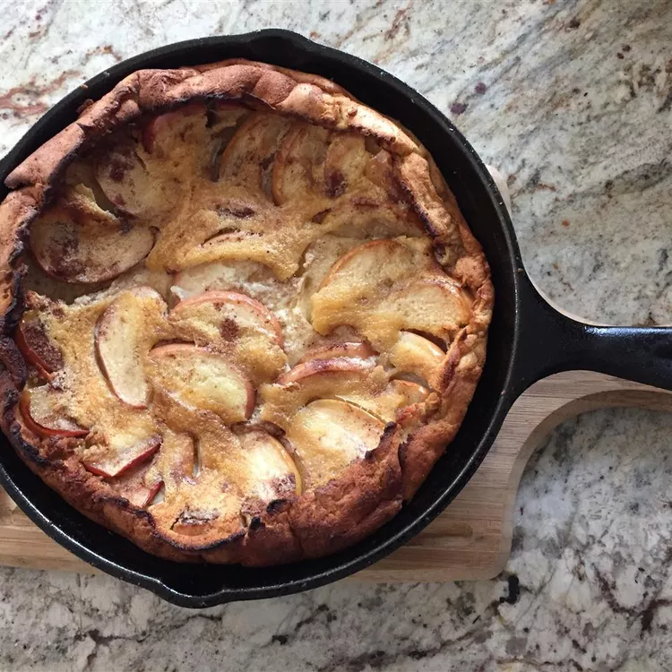

Яблочный пирог

Описание
Этот немецкий яблочный блинчик также известен как голландский беби.
Это потрясающий рецепт блинчиков для особых случаев.
Если у вас мало времени, вы можете приготовить их накануне вечером и запечь в духовке.
Подача превосходная!
Ингредиенты
- 4 крупных яйца
- ½ стакана небеленой муки общего назначения
- 1 столовая ложка сахара
- ½ чайной ложки разрыхлителя
- 1 щепотка соли
- 1 чашка молока
- 1 чайная ложка ванильного экстракта
- 2 столовые ложки растопленного несоленого сливочного масла
- ½ чайной ложки молотого мускатного ореха
- ¼ стакана несоленого сливочного масла
- ½ стакана белого сахара, разделенного
- ½ чайной ложки молотой корицы
- ½ чайной ложки молотого мускатного ореха
- 1 большое терпкое яблоко - очистить от кожуры, сердцевины и нарезать ломтиками
Инструкции
-
Смешайте яйца, муку, 1 столовую ложку сахара, разрыхлитель и соль в большой миске; постепенно влейте молоко,
постоянно помешивая. Добавьте ваниль, растопленное сливочное масло и 1/2 чайной ложки мускатного ореха.
Дайте тесту
постоять 30 минут или ночь.
- Разогрейте духовку до 425 градусов по Фаренгейту (220 градусов по Цельсию).
- Растопите сливочное масло в 10-дюймовой сковороде для запекания, смазывая маслом стенки формы. Смешайте 1/4
стакана
сахара, корицу и 1/2 чайной ложки мускатного ореха в небольшой миске; посыпьте сахарной смесью сливочное
масло.
Выложите на противень ломтики яблок. Посыпьте яблоки оставшейся 1/4 стакана сахара. Поставьте сковороду на
средне-сильный огонь, пока смесь не начнет пузыриться, затем аккуратно вылейте тесто на яблоки.
- Выпекайте в предварительно разогретой духовке 15 минут. Уменьшите огонь до 190 градусов по Фаренгейту и
выпекайте
еще 10 минут. Выложите блинчики горкой на сервировочное блюдо и нарежьте брусочками.